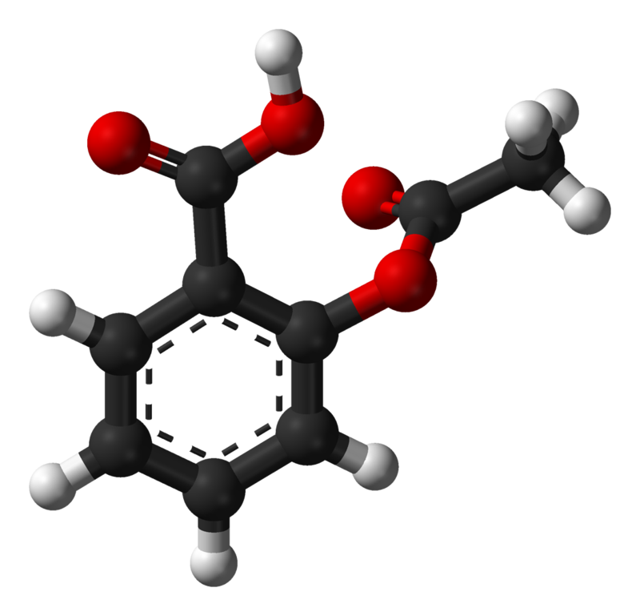

library(AppliedPredictiveModeling)
library(tidyverse)
#needed to calculate skewness statistic:
library(e1071)
#needed for box-cox transformation to resolve skewness:
library(caret)
#needed for examining linear model output in a tidy way
library(tidymodels)In-class Case Study: Solubility Model using Linear Regression
Case Study: Quantitative Structure-Activity Relationship Modeling
This exercise is inspired by an example in the book Applied Predictive Modeling by Max Kuhn and Kjell Johnson.
Chemicals, including drugs, can be represented by chemical formulas. For example, the figure below (source: Wikipedia) shows the structure of aspirin, which contains nine carbon, eight hydrogen, and four oxygen atoms. From this configuration, quantitative measurements can be derived, such as the molecular weight, electrical charge, or surface area. These quantities are referred to as chemical descriptors, and there are many different types that can be derived from a chemical equation. Some are simplistic, such as the number of carbon atoms, while others are more complicated.

Some characteristics of molecules cannot be analytically determined from the chemical structure. For example, one way a compound may be of medical value is if it can inhibit production of a specific protein. This is usually called the biological activity of a compound. The relationship between the chemical struture and its activity can be complex. As such, the relationship is usually determined empirically using experiments. One way to do this is to create a biological assay for the target of interest (for example, the protein). A set of compounds can then be placed into the assay and their activity, or inhibition, is measured. This activity information generates data which can be used as the training set for predictive modeling so that compounds, which may not yet exist, can be screened for activity. This process is referred to as quantitative structure-activity relationship (QSAR) modeling.
While activity is important, other characteristics need to be assessed to determine if a compound is “drug-like”. Physical qualities, such as the solubility or lipophilicity (“greasiness”) are evaluated as well as other properties, such as toxicity. A compound’s solubility is very important if it is to be given orally or by injection.
We will use linear regression techniques to predict solubility using chemical structures. For our analyses, we will use 1,267 compounds and a set of descriptors that fall into one of three groups:
Binary “fingerprints” that indicate the presence or absence of a particular chemical substructure (208 descriptors fall into this category);
Count descriptors, such as the number of bonds or the number of bromine atoms (16 descriptors);
Continuous descriptors, such as molecular weight or surface area (4 descriptors)
The Data
In some cases, we should expect correlations between descriptors. In the solubility data, for example, the surface area of a compound is calculated for regions associated with certain atoms (e.g., nitrogen or oxygen). One descriptor in the dataset measures the surface area associated with two specific elements while another uses the same elements plus two more. Given their definitions, we would expect that the two surface area predictors would be correlated.
Another relevant quality of the solubility predictors is that the count-based descriptors show a significant right skewness, which may have an impact on a linear model.
The solubility (response) was measured on the log base 10 scale.
The data has already been split into training (n = 951) and test (n = 316) sets. using random sampling. The data can be found in the AppliedPredictiveModeling library. You will need to first install the package by running the following command in your R console: install.packages("AppliedPredictiveModeling"). As you work through this exercise, you may need to add libraries to the code chunk below.
To load the data, run the code below:
data(solubility)The predictors for the training and test sets are contained in data frames called solTrainX and solTestX, respectively. Each column of the data corresponds to a predictor (i.e., chemical descriptor) and the rows correspond to compounds. There are 228 columns in the data. If you view the training and test sets, you will notice a number of columns that begin with “FP”. These columns correspond to the binary 0/1 fingerprint predictors that are associated with the presence or absence of a particular chemical structure. (Note: we will leave these binary indicator variables as type numeric for now since our goal is prediction and not inference).
The solubility response values are contained in the vectors solTrainY and solTestY.
Part 1: Data Exploration
It is useful to explore the training data to understand the characteristics of the data prior to modeling.
- Choose two of the binary predictor variables and create an appropriate visualization that shows the relationship between the predictor variable and the solubility training response. You should treat the binary predictor variable as a factor in your plots. Be sure to include appropriate axis labels in your visualization. Summarize what can be learned from your visualizations.
ggplot(solTrainX, aes(x = as.factor(FP001),y = solTrainY)) +
geom_boxplot() +
labs(y = "Solubility",
x = "FP001 Indicator")
ggplot(solTrainX, aes(x = as.factor(FP008), y = solTrainY)) +
geom_boxplot() +
labs(y = "Solubility",
x = "FP008 Indicator")
- Now we will evaluate the continuous predictors for skewness (these are all of the other numeric predictors whose column names do not begin with “
FP”). One rule of thumb to consider is that skewed data whose ratio of the highest value to the lowest value is greater than 20 have significant skewness. Also, the skewness statistic can be computed. If the predictor distribution is roughly symmetric, the skewness value will be close to zero. As the distribution becomes more right skewed, the skewness statistic becomes larger. Similarly, as the distribution becomes more left skewed, the value becomes negative.
First, we will calculate relevant summary statistics for the predictors in the training data.
library(skimr)
sumstatsTrain <- solTrainX %>%
select(-(starts_with("FP"))) %>%
skim() %>%
tibble::as_tibble() %>%
select(-c(numeric.hist, complete_rate, skim_type)) %>%
rename(minimum = numeric.p0,
maximum = numeric.p100)
sumstatsTrain# A tibble: 20 × 9
skim_variable n_missing numeric.mean numeric.sd minimum numeric.p25
<chr> <int> <dbl> <dbl> <dbl> <dbl>
1 MolWeight 0 202. 97.9 46.1 123.
2 NumAtoms 0 25.5 12.6 5 17
3 NumNonHAtoms 0 13.2 6.50 2 8
4 NumBonds 0 25.9 13.5 4 17
5 NumNonHBonds 0 13.6 7.57 1 8
6 NumMultBonds 0 6.15 5.17 0 1
7 NumRotBonds 0 2.25 2.41 0 0
8 NumDblBonds 0 1.01 1.21 0 0
9 NumAromaticBonds 0 5.12 5.26 0 0
10 NumHydrogen 0 12.3 7.32 0 7
11 NumCarbon 0 9.89 5.29 1 6
12 NumNitrogen 0 0.813 1.19 0 0
13 NumOxygen 0 1.57 1.73 0 0
14 NumSulfer 0 0.164 0.488 0 0
15 NumChlorine 0 0.556 1.40 0 0
16 NumHalogen 0 0.698 1.47 0 0
17 NumRings 0 1.40 1.30 0 0
18 HydrophilicFactor 0 -0.0206 1.13 -0.985 -0.763
19 SurfaceArea1 0 36.5 35.3 0 9.23
20 SurfaceArea2 0 40.2 38.1 0 10.6
# ℹ 3 more variables: numeric.p50 <dbl>, numeric.p75 <dbl>, maximum <dbl># The `tidy()` function from the broom package summarizes key objects from
# statistical output into a tibble (in this case, it puts the output from
# `summary()` into a tibble). The map_dfr() function in the `purrr` tidyverse
# package applies a function to each element, in this case a column, and
# returns a tibble.
# This method works as well to generate a table of summary statistics for
# multiple columns, but you will get a warning message to use skim instead
# of summary. Also, map_dfr may be deprecated in the purrr package.
# first, select the non-binary predictor columns
sumstatsTrain-alt <- solTrainX %>%
select(-(starts_with("FP"))) %>%
map_dfr(.f = ~ broom::tidy(summary(.x)), .id = "variable")
sumstatsTrain-alt# The code below gives the same result!
long_summary <- solTrainX |>
select(-(starts_with("FP"))) |>
pivot_longer(MolWeight:SurfaceArea2) |>
group_by(name) |>
summarize(
minimum = min(value),
q1 = quantile(value, 0.25),
median = median(value),
mean = mean(value),
q3 = quantile(value, 0.75),
maximum = max(value)
)
long_summaryIn the code below, we will add a new column to the summary statistics table that calculates the ratio of the maximum to the minimum. What can you conclude from this calculation about the skewness of the predictors?
sumstatsTrain <- sumstatsTrain %>%
mutate(skewRatio = maximum/minimum)# some resulting values could be infinity if the minimum is 0.
# One solution might be to add 1e-5, or some other small number to each 0 value:
sumstatsTrain <- sumstatsTrain %>%
mutate(minimum = if_else(minimum == 0, minimum + 0.0001, minimum),
skewRatio = maximum/minimum)We can conclude that most of the predictors are right skewed since they have ratios larger than 20.
Finally, we will calculate the skewness statistic for each predictor variable. To calculate the skewness for one predictor, you use the skewness function from library e1071:
skewness(solTrainX$MolWeight)[1] 0.9868244The apply function can be used to compute the skewness statistic for multiple predictors as follows: apply(data, 2, skewness), where the second argument 2 means apply to the columns. A value of 1 would apply the skewness function to the rows.
Calculate the skewness statistic for each non-binary predictor in the training set. Hint: you first might need to select the columns you want as part of a pipe, as we did earlier. What can you conclude from the skewness statistics?
All of the predictors have a skewness greater than 0, so they all appear to be right skewed.
#Solution:
skewstats <- solTrainX %>%
select(-(starts_with("FP"))) %>%
apply(2, skewness)
skewstats MolWeight NumAtoms NumNonHAtoms NumBonds
0.9868244 1.3623110 0.9915112 1.3579007
NumNonHBonds NumMultBonds NumRotBonds NumDblBonds
0.9677742 0.6691816 1.5749735 1.3574802
NumAromaticBonds NumHydrogen NumCarbon NumNitrogen
0.7943773 1.2595533 0.9258765 1.5516424
NumOxygen NumSulfer NumChlorine NumHalogen
1.7688961 3.8354736 3.1729273 2.6872423
NumRings HydrophilicFactor SurfaceArea1 SurfaceArea2
1.0324447 3.3984174 1.7114409 1.4727158 - You should have discovered in the previous question that most of the non-binary predictors appear to be right skewed. We will apply a Box-Cox transformation to the predictor variables. Be sure to read the short post linked above to understand how the Box-Cox transformation works before proceeding.
We first apply the Box-Cox transformation to our dataset of predictors using the preProcess() function from the caret package, and then predict the value (create the transformed predictor values). Recall, however, that we only want to apply the transformation to a subset of the training set predictors. So we will first create a dataset containing only those predictors we want to transform. After applying the transformation, we will have to join the result to the binary predictor columns in the training set. After running the two code chunks below, you will have a dataset of transformed predictor variables.
predictors <- solTrainX %>%
select(-(starts_with("FP")))
bc_trans <- preProcess(predictors, method = c("BoxCox"))
#bc_trans <- preProcess(predictors, method = c("YeoJohnson"))
#apply the transformation:
trans_data <- predict(bc_trans, predictors)#join the transformed predictor columns to the binary predictor variable columns
#to obtain a complete dataset of transformed predictor variables:
solTrainXtrans_new <- solTrainX %>%
select(starts_with("FP")) %>%
bind_cols(trans_data)Note: The data in the AppliedPredictiveModeling library contains datasets of the Box-Cox transformed predictor variables. If you compare the output of the code below to the comparable columns in the dataset solTrainXtrans, you will see the results are very similar, however some columns in our resulting dataset were not transformed! This is because they contain zero values, and the Box-Cox transformation can only be applied to values strictly greater than 0. The Yeo-Johnson transformation is similar to the Box-Cox model but can accommodate predictors with zero and/or negative values. In the first code chunk below, the code to generate the Yeo-Johnson transformed values is given. Rather than rerunning our code at this point, we will just use the provided transformed training set solTrainXtrans.
Also note that any transformation we apply to the training data must also be applied to the test data. To save us a little time, we will use the provided transformed test set solTestXtrans later to evaluate the predictive capabilities of our model.
- Using the transformed predictors, is it safe to assume that the relationship between the predictors and the response is linear? In the next code chunk, you will complete the code to create scatterplots of the (non-binary) predictors and the response along with a regression line from a flexible “smoother” model called loess. Summarize your findings from these scatterplots. Do you see any relationships that might be nonlinear? If so, these are variables we might want to consider adding interaction terms or quadratic terms for.
See this blogpost for more details on the scatterplot code below.
# first, create a vector of the x predictor variable names
x = names(solTrainXtrans %>% select(MolWeight: SurfaceArea2))#next we will write a function that can create a scatterplot based on one input value, the name of the x variable. The same y variable, the solubility, will be used for each plot.
scatter_fun <- function(xvar) {
# this is a newer way to specify the variable, but it does not seem to
# work with the map function!
#ggplot(solTrainXtrans, aes(x = {{xvar}}, y = solTrainY)) +
ggplot(solTrainXtrans, aes(x = .data[[xvar]], y = solTrainY)) +
geom_jitter() +
geom_smooth(method = "loess", se = FALSE, color = "blue") +
theme_bw() +
labs(y = NULL)
}#finally we will use a loop to generate one plot for each predictor variable in vector x
scatter_plots = map(x, \(x) scatter_fun(x))
# Below is an a way to call map that is compatible with older versions of R:
#scatter_plots = map(x, ~scatter_fun(.x))#Last step: display all the scatterplots at once
cowplot::plot_grid(plotlist = scatter_plots, combine = TRUE, ncol = 5, greedy = FALSE)
- Checking for collinearity: The next step in the model building process for linear regression is to identify predictors that have high pairwise correlations and to remove predictors so that no absolute pairwise correlation is greater than some pre-specified level. We will chose to remove predictors that have pairwise correlations greater than 0.9.
Create a correlation plot or correlation matrix for the transformed non-binary predictor variables insolTrainXtransand identify pairs of predictors that have a correlation greater than 0.9. Make a list of variables you are eliminating.
# Solution:
solTrainXtrans %>%
select(-(starts_with("FP"))) %>%
cor() MolWeight NumAtoms NumNonHAtoms NumBonds NumNonHBonds
MolWeight 1.0000000 0.69610172 0.89823866 0.710742710 0.88800410
NumAtoms 0.6961017 1.00000000 0.87532709 0.996691798 0.85474502
NumNonHAtoms 0.8982387 0.87532709 1.00000000 0.896275289 0.99432277
NumBonds 0.7107427 0.99669180 0.89627529 1.000000000 0.88186427
NumNonHBonds 0.8880041 0.85474502 0.99432277 0.881864265 1.00000000
NumMultBonds 0.5354333 0.33284112 0.63285558 0.385817944 0.66298498
NumRotBonds 0.3328353 0.60563735 0.41723707 0.560567103 0.33891147
NumDblBonds 0.3207266 0.34341517 0.39432976 0.332715708 0.36972611
NumAromaticBonds 0.4070923 0.19947529 0.47542737 0.251742883 0.50643784
NumHydrogen 0.3617689 0.88385914 0.56601051 0.857340997 0.54179485
NumCarbon 0.7600253 0.91451758 0.92382990 0.934695343 0.93036238
NumNitrogen 0.1923174 0.18253455 0.27764737 0.195885899 0.28097736
NumOxygen 0.3566490 0.47818708 0.46823012 0.461505083 0.43698070
NumSulfer 0.2292119 0.14973082 0.19401590 0.149572477 0.18185564
NumChlorine 0.2753478 -0.15795915 0.07457244 -0.148551096 0.06627682
NumHalogen 0.3403341 -0.21168269 0.03617795 -0.204749405 0.03252441
NumRings 0.6591118 0.54852322 0.76559531 0.605789531 0.82750105
HydrophilicFactor 0.1217825 0.01940475 0.10458172 0.007656316 0.08436926
SurfaceArea1 0.3153210 0.43075217 0.46300980 0.424561599 0.44070587
SurfaceArea2 0.3381680 0.43552246 0.46706490 0.428715851 0.44317776
NumMultBonds NumRotBonds NumDblBonds NumAromaticBonds
MolWeight 0.535433321 0.332835349 0.3207266 0.40709231
NumAtoms 0.332841117 0.605637346 0.3434152 0.19947529
NumNonHAtoms 0.632855584 0.417237066 0.3943298 0.47542737
NumBonds 0.385817944 0.560567103 0.3327157 0.25174288
NumNonHBonds 0.662984977 0.338911467 0.3697261 0.50643784
NumMultBonds 1.000000000 -0.007816807 0.1071963 0.93830270
NumRotBonds -0.007816807 1.000000000 0.3415871 -0.06689140
NumDblBonds 0.107196327 0.341587063 1.0000000 -0.14496827
NumAromaticBonds 0.938302702 -0.066891403 -0.1449683 1.00000000
NumHydrogen -0.012380711 0.624747929 0.2593335 -0.10464231
NumCarbon 0.596506638 0.386992843 0.2532969 0.46366461
NumNitrogen 0.334034195 0.097052723 0.2767438 0.28705455
NumOxygen 0.063899497 0.486106615 0.6806364 -0.08064107
NumSulfer 0.163830055 0.191011723 0.2440997 0.11518563
NumChlorine 0.097153322 -0.132320470 -0.1476450 0.13571580
NumHalogen 0.075507236 -0.182709482 -0.1709653 0.11791769
NumRings 0.740413008 -0.154291144 0.1610290 0.63236967
HydrophilicFactor -0.055952462 0.135176192 0.3057951 -0.08927023
SurfaceArea1 0.178744185 0.398938069 0.6233298 0.04264631
SurfaceArea2 0.179287259 0.423290739 0.6225536 0.04159742
NumHydrogen NumCarbon NumNitrogen NumOxygen NumSulfer
MolWeight 0.36176892 0.76002528 0.19231738 0.35664901 0.22921192
NumAtoms 0.88385914 0.91451758 0.18253455 0.47818708 0.14973082
NumNonHAtoms 0.56601051 0.92382990 0.27764737 0.46823012 0.19401590
NumBonds 0.85734100 0.93469534 0.19588590 0.46150508 0.14957248
NumNonHBonds 0.54179485 0.93036238 0.28097736 0.43698070 0.18185564
NumMultBonds -0.01238071 0.59650664 0.33403420 0.06389950 0.16383005
NumRotBonds 0.62474793 0.38699284 0.09705272 0.48610662 0.19101172
NumDblBonds 0.25933353 0.25329689 0.27674383 0.68063638 0.24409970
NumAromaticBonds -0.10464231 0.46366461 0.28705455 -0.08064107 0.11518563
NumHydrogen 1.00000000 0.70158698 0.08003308 0.42054127 0.08566589
NumCarbon 0.70158698 1.00000000 0.11399607 0.32511548 0.05438636
NumNitrogen 0.08003308 0.11399607 1.00000000 0.13548209 0.34390612
NumOxygen 0.42054127 0.32511548 0.13548209 1.00000000 0.09872714
NumSulfer 0.08566589 0.05438636 0.34390612 0.09872714 1.00000000
NumChlorine -0.37018983 -0.05115255 -0.11778421 -0.24462879 -0.04419579
NumHalogen -0.40639066 -0.08441069 -0.14771916 -0.27367027 -0.06685087
NumRings 0.25242586 0.76457221 0.26147051 0.17446771 0.07907797
HydrophilicFactor -0.02698042 -0.12736520 0.43107784 0.53754976 0.16082357
SurfaceArea1 0.34968127 0.27374888 0.52442505 0.84758765 0.20718321
SurfaceArea2 0.35586253 0.26414558 0.54624818 0.80212603 0.41614613
NumChlorine NumHalogen NumRings HydrophilicFactor
MolWeight 0.27534781 0.34033413 0.65911177 0.121782479
NumAtoms -0.15795915 -0.21168269 0.54852322 0.019404752
NumNonHAtoms 0.07457244 0.03617795 0.76559531 0.104581723
NumBonds -0.14855110 -0.20474941 0.60578953 0.007656316
NumNonHBonds 0.06627682 0.03252441 0.82750105 0.084369258
NumMultBonds 0.09715332 0.07550724 0.74041301 -0.055952462
NumRotBonds -0.13232047 -0.18270948 -0.15429114 0.135176192
NumDblBonds -0.14764504 -0.17096530 0.16102899 0.305795079
NumAromaticBonds 0.13571580 0.11791769 0.63236967 -0.089270232
NumHydrogen -0.37018983 -0.40639066 0.25242586 -0.026980418
NumCarbon -0.05115255 -0.08441069 0.76457221 -0.127365202
NumNitrogen -0.11778421 -0.14771916 0.26147051 0.431077844
NumOxygen -0.24462879 -0.27367027 0.17446771 0.537549757
NumSulfer -0.04419579 -0.06685087 0.07907797 0.160823570
NumChlorine 1.00000000 0.84296473 0.04174489 -0.065989216
NumHalogen 0.84296473 1.00000000 0.03248831 -0.054683621
NumRings 0.04174489 0.03248831 1.00000000 -0.028054101
HydrophilicFactor -0.06598922 -0.05468362 -0.02805410 1.000000000
SurfaceArea1 -0.29529157 -0.33139026 0.23548069 0.747674729
SurfaceArea2 -0.29334327 -0.33386195 0.22213023 0.720808950
SurfaceArea1 SurfaceArea2
MolWeight 0.31532096 0.33816803
NumAtoms 0.43075217 0.43552246
NumNonHAtoms 0.46300980 0.46706490
NumBonds 0.42456160 0.42871585
NumNonHBonds 0.44070587 0.44317776
NumMultBonds 0.17874419 0.17928726
NumRotBonds 0.39893807 0.42329074
NumDblBonds 0.62332984 0.62255356
NumAromaticBonds 0.04264631 0.04159742
NumHydrogen 0.34968127 0.35586253
NumCarbon 0.27374888 0.26414558
NumNitrogen 0.52442505 0.54624818
NumOxygen 0.84758765 0.80212603
NumSulfer 0.20718321 0.41614613
NumChlorine -0.29529157 -0.29334327
NumHalogen -0.33139026 -0.33386195
NumRings 0.23548069 0.22213023
HydrophilicFactor 0.74767473 0.72080895
SurfaceArea1 1.00000000 0.95829854
SurfaceArea2 0.95829854 1.00000000Looking at the correlation matrix, we see the following pairs of variables have a correlation larger than 0.9. I will eliminate the first one listed in each pair:
NumAtoms, NumBonds
NumNonHAtoms, NumNonHBonds
NumAromaticBonds, NumMultBonds
NumCarbon, NumAtoms
NumCarbon, NumNonHBonds
NumCarbon, NumBonds NumCarbon, NumNonHBonds
- Removing predictors one at a time until all pairwise correlations are below some threshold is a tedious process, especially when there are a large number of predictor variables. Later we will learn dimension reduction methods that can be applied before performing linear regression that will help with this. Future prediction methods that we will learn this semester are not as affected by multicollinearity.
Here is some code to help remove variables with correlations above a threshold. this code will also generate a new dataset of predictor variables called trainXfiltered. Run the code below and examine the output. How many variables were eliminated? Were the same variables removed as you found in the previous question?
#Note: this analysis also includes the binary predictors
corThresh <- 0.9
tooHigh <- findCorrelation(cor(solTrainXtrans), corThresh)
corrPred <- names(solTrainXtrans)[tooHigh]
trainXfiltered <- solTrainXtrans[, -tooHigh]
#Next we need to also eliminate the same variables from the test set:
testXfiltered <- solTestXtrans[, -tooHigh]38 variables were eliminated!
- It is finally time to fit a linear model! For our first model, we will predict solubility using all available predictors in
trainXfiltered. Before fitting the model, we will need to add the response variable to our dataset of predictor variables. The code chunk below helps with this step. Add to the code to fit a linear model using all predictor variables. Usesummaryto find estimates of the RMSE and \(R^2\). (Note that these values are likely to be highly optimistic as they have been derived by re-predicting the training set data).
trainData <- trainXfiltered
trainData$solubility <- solTrainY#Solution: linear model with all predictors
mod_all <- lm(solubility ~ ., data = trainData)
summary(mod_all)
Call:
lm(formula = solubility ~ ., data = trainData)
Residuals:
Min 1Q Median 3Q Max
-1.75117 -0.30299 0.00774 0.33748 1.78063
Coefficients:
Estimate Std. Error t value Pr(>|t|)
(Intercept) 7.571378 0.721221 10.498 < 2e-16 ***
FP003 -0.203633 0.125777 -1.619 0.105863
FP004 -0.245683 0.134816 -1.822 0.068792 .
FP006 -0.293773 0.201638 -1.457 0.145548
FP007 0.024407 0.117802 0.207 0.835922
FP008 0.054001 0.151260 0.357 0.721185
FP010 0.511386 0.294589 1.736 0.082981 .
FP011 0.407985 0.203092 2.009 0.044904 *
FP012 -0.163863 0.158213 -1.036 0.300667
FP015 -0.260410 0.143591 -1.814 0.070140 .
FP016 -0.072991 0.154987 -0.471 0.637813
FP017 -0.250154 0.139511 -1.793 0.073358 .
FP020 0.343356 0.210516 1.631 0.103300
FP021 -0.103565 0.146576 -0.707 0.480055
FP023 -0.504772 0.175591 -2.875 0.004157 **
FP024 -0.581714 0.206789 -2.813 0.005034 **
FP027 0.212877 0.237464 0.896 0.370290
FP028 0.073409 0.121553 0.604 0.546070
FP029 -0.205971 0.208468 -0.988 0.323455
FP031 0.126738 0.130450 0.972 0.331588
FP032 -0.386326 0.328624 -1.176 0.240128
FP034 -0.022305 0.233196 -0.096 0.923824
FP035 -0.220591 0.172159 -1.281 0.200471
FP036 -0.057148 0.160730 -0.356 0.722272
FP037 0.170961 0.163988 1.043 0.297503
FP038 0.238273 0.190312 1.252 0.210949
FP039 -0.433763 0.172295 -2.518 0.012021 *
FP040 0.640071 0.169035 3.787 0.000165 ***
FP043 0.220955 0.202674 1.090 0.275972
FP044 -0.325521 0.213552 -1.524 0.127845
FP045 0.188119 0.129722 1.450 0.147426
FP046 0.017082 0.177600 0.096 0.923403
FP047 -0.021096 0.140082 -0.151 0.880333
FP048 0.189597 0.189194 1.002 0.316602
FP049 0.331020 0.176259 1.878 0.060759 .
FP050 -0.123052 0.146039 -0.843 0.399717
FP051 -0.181187 0.143155 -1.266 0.206019
FP052 -0.284876 0.187932 -1.516 0.129975
FP053 0.149311 0.242740 0.615 0.538670
FP054 -0.003567 0.185479 -0.019 0.984663
FP055 -0.284995 0.189475 -1.504 0.132963
FP057 -0.110272 0.137171 -0.804 0.421707
FP059 -0.194059 0.174972 -1.109 0.267744
FP060 0.234238 0.148684 1.575 0.115578
FP061 -0.494177 0.134728 -3.668 0.000262 ***
FP062 -0.059643 0.179622 -0.332 0.739943
FP063 0.269042 0.200636 1.341 0.180338
FP064 0.295703 0.116926 2.529 0.011641 *
FP065 -0.163513 0.117652 -1.390 0.164997
FP066 0.183024 0.122375 1.496 0.135174
FP068 0.356801 0.193884 1.840 0.066117 .
FP069 0.137843 0.087220 1.580 0.114431
FP070 -0.026801 0.081182 -0.330 0.741387
FP071 0.261243 0.119262 2.191 0.028791 *
FP072 -0.548348 0.256147 -2.141 0.032611 *
FP073 -0.616571 0.206356 -2.988 0.002899 **
FP074 0.103847 0.117453 0.884 0.376892
FP075 0.072652 0.102902 0.706 0.480387
FP076 0.549519 0.154814 3.550 0.000410 ***
FP077 0.129873 0.119862 1.084 0.278922
FP078 -0.325269 0.158097 -2.057 0.039989 *
FP079 0.628524 0.180970 3.473 0.000544 ***
FP080 0.240689 0.147074 1.637 0.102146
FP081 -0.262394 0.107309 -2.445 0.014703 *
FP082 0.203692 0.096033 2.121 0.034239 *
FP083 -0.456937 0.193564 -2.361 0.018495 *
FP084 0.433854 0.238778 1.817 0.069615 .
FP085 -0.484140 0.136979 -3.534 0.000433 ***
FP086 -0.031532 0.096209 -0.328 0.743199
FP088 0.199773 0.103014 1.939 0.052835 .
FP089 0.149032 0.146472 1.017 0.309250
FP090 -0.089342 0.119315 -0.749 0.454216
FP091 0.214809 0.145889 1.472 0.141323
FP092 0.221814 0.181893 1.219 0.223043
FP093 0.224537 0.110708 2.028 0.042889 *
FP094 -0.163827 0.141930 -1.154 0.248749
FP095 -0.057950 0.113887 -0.509 0.611010
FP096 -0.400525 0.138485 -2.892 0.003935 **
FP097 -0.075422 0.152096 -0.496 0.620121
FP098 -0.064148 0.160514 -0.400 0.689535
FP099 0.041869 0.258526 0.162 0.871387
FP101 -0.270801 0.280517 -0.965 0.334670
FP102 0.165869 0.328068 0.506 0.613290
FP103 -0.144433 0.093612 -1.543 0.123272
FP104 -0.158543 0.117517 -1.349 0.177704
FP105 -0.091584 0.144138 -0.635 0.525365
FP106 0.177042 0.126147 1.403 0.160889
FP107 -0.344921 0.145884 -2.364 0.018312 *
FP108 -0.053466 0.181369 -0.295 0.768234
FP109 0.490842 0.194895 2.518 0.011990 *
FP110 -0.002411 0.186556 -0.013 0.989694
FP111 -0.494055 0.136951 -3.608 0.000329 ***
FP112 -0.167792 0.229270 -0.732 0.464482
FP113 0.193205 0.098787 1.956 0.050857 .
FP114 -0.001013 0.175506 -0.006 0.995398
FP115 -0.181530 0.136686 -1.328 0.184552
FP116 -0.023894 0.185356 -0.129 0.897464
FP117 0.273457 0.178447 1.532 0.125834
FP118 -0.249298 0.123224 -2.023 0.043410 *
FP119 0.724889 0.268005 2.705 0.006988 **
FP120 -0.334337 0.179812 -1.859 0.063361 .
FP121 -0.008729 0.401150 -0.022 0.982645
FP122 0.121003 0.106416 1.137 0.255866
FP123 0.276596 0.174318 1.587 0.112989
FP124 0.073375 0.167373 0.438 0.661226
FP125 0.067049 0.114941 0.583 0.559842
FP126 -0.193571 0.117777 -1.644 0.100683
FP127 -0.725249 0.166518 -4.355 1.51e-05 ***
FP128 -0.359661 0.192079 -1.872 0.061526 .
FP129 0.062750 0.220989 0.284 0.776525
FP130 -1.014647 0.356411 -2.847 0.004535 **
FP131 0.213752 0.144167 1.483 0.138576
FP132 -0.432864 0.223142 -1.940 0.052766 .
FP133 -0.212664 0.120400 -1.766 0.077746 .
FP135 0.147372 0.133331 1.105 0.269375
FP137 -0.212190 0.288570 -0.735 0.462373
FP138 0.059583 0.186308 0.320 0.749202
FP139 0.052058 0.371302 0.140 0.888536
FP140 0.211083 0.216470 0.975 0.329815
FP142 0.529889 0.147598 3.590 0.000352 ***
FP143 0.833123 0.274718 3.033 0.002507 **
FP144 -0.109165 0.200636 -0.544 0.586536
FP145 -0.051659 0.119637 -0.432 0.666012
FP146 -0.280023 0.193827 -1.445 0.148953
FP147 0.202207 0.123968 1.631 0.103279
FP148 -0.225041 0.130309 -1.727 0.084577 .
FP149 -0.053431 0.160629 -0.333 0.739502
FP150 0.060941 0.138380 0.440 0.659781
FP151 0.146808 0.299835 0.490 0.624537
FP152 0.073812 0.260435 0.283 0.776933
FP153 -0.180357 0.282667 -0.638 0.523630
FP154 -0.857905 0.190537 -4.503 7.77e-06 ***
FP155 0.255593 0.190017 1.345 0.178992
FP156 -0.363826 0.339645 -1.071 0.284422
FP157 -0.449879 0.247945 -1.814 0.070005 .
FP158 0.074696 0.192041 0.389 0.697414
FP159 0.336618 0.237432 1.418 0.156675
FP160 -0.263409 0.212161 -1.242 0.214784
FP161 -0.312347 0.145323 -2.149 0.031923 *
FP162 0.083824 0.160109 0.524 0.600746
FP164 0.763222 0.164720 4.633 4.23e-06 ***
FP165 0.075753 0.141543 0.535 0.592671
FP168 0.052508 0.173603 0.302 0.762382
FP169 -0.181904 0.083339 -2.183 0.029364 *
FP170 0.047830 0.155231 0.308 0.758075
FP171 0.367643 0.115021 3.196 0.001450 **
FP172 -0.660904 0.239757 -2.757 0.005981 **
FP173 0.375440 0.166889 2.250 0.024757 *
FP174 0.107117 0.194982 0.549 0.582914
FP176 0.838332 0.231741 3.618 0.000317 ***
FP177 0.262602 0.237466 1.106 0.269141
FP178 0.088180 0.211407 0.417 0.676715
FP179 0.118962 0.119362 0.997 0.319252
FP180 -0.428917 0.303894 -1.411 0.158536
FP181 0.608771 0.327740 1.857 0.063629 .
FP182 -0.063676 0.135574 -0.470 0.638720
FP184 0.361013 0.150073 2.406 0.016385 *
FP185 -0.117906 0.200190 -0.589 0.556055
FP186 -0.528476 0.194143 -2.722 0.006635 **
FP187 0.388397 0.267786 1.450 0.147359
FP188 0.182617 0.129715 1.408 0.159589
FP189 0.044570 0.312058 0.143 0.886467
FP190 0.528507 0.305684 1.729 0.084227 .
FP191 0.324038 0.138951 2.332 0.019959 *
FP192 -0.086474 0.268328 -0.322 0.747338
FP193 0.104193 0.146156 0.713 0.476136
FP194 0.453201 0.262206 1.728 0.084320 .
FP195 0.466211 0.336823 1.384 0.166722
FP196 -0.150568 0.256016 -0.588 0.556626
FP197 -0.121499 0.156355 -0.777 0.437356
FP198 0.372216 0.265396 1.402 0.161177
FP199 -0.071129 0.183623 -0.387 0.698595
FP200 0.020267 0.209728 0.097 0.923043
FP201 -0.631826 0.169916 -3.718 0.000215 ***
FP202 0.468376 0.179938 2.603 0.009422 **
FP203 0.058184 0.119639 0.486 0.626873
FP204 -0.116575 0.263747 -0.442 0.658620
FP205 -0.014013 0.152783 -0.092 0.926948
FP206 -0.012881 0.193382 -0.067 0.946911
FP207 -0.123819 0.213318 -0.580 0.561787
MolWeight -1.597913 0.162252 -9.848 < 2e-16 ***
NumMultBonds -0.195008 0.092358 -2.111 0.035062 *
NumRotBonds -0.477828 0.131276 -3.640 0.000291 ***
NumDblBonds 0.149040 0.257675 0.578 0.563163
NumHydrogen 0.366113 0.108005 3.390 0.000736 ***
NumCarbon -1.526231 0.204204 -7.474 2.14e-13 ***
NumOxygen 1.431560 0.387039 3.699 0.000232 ***
NumSulfer -0.506204 0.466597 -1.085 0.278316
NumRings -1.026857 0.343934 -2.986 0.002921 **
HydrophilicFactor -0.111670 0.102123 -1.093 0.274528
SurfaceArea1 0.255892 0.036136 7.081 3.25e-12 ***
---
Signif. codes: 0 '***' 0.001 '**' 0.01 '*' 0.05 '.' 0.1 ' ' 1
Residual standard error: 0.587 on 760 degrees of freedom
Multiple R-squared: 0.9342, Adjusted R-squared: 0.9178
F-statistic: 56.79 on 190 and 760 DF, p-value: < 2.2e-16- Now use the model generated in the previous question to predict solubility values for the new observations in
testXfilteredusing thepredictfunction. Name the vector of predicted valueslmpred.
Compare your predicted values to the actual observed values in solTestY. I have given you code below that uses the defaultSummary function in the caret package to easily calculate the RMSE for the test data. Once you have calculated your vector of predicted values, you simply need to run this code chunk.
# Solution: calculate the predicted values for the test data using the full linear model:
lmpred <- predict(mod_all, testXfiltered)
head(lmpred) 20 21 23 25 28 31
0.87458991 0.09911774 -0.51698844 0.79768536 0.21186617 1.50363807 # Collect the observed and predicted values into a data frame, then use defaultSummary to estimate the test data performance:
lmValues <- data.frame(obs = solTestY, pred = lmpred)
defaultSummary(lmValues) RMSE Rsquared MAE
0.7601790 0.8669049 0.5661760 - Look back at the scatterplots you generated earlier and determine if an interaction term(s) or other nonlinear relationship should be added to your model (for example, if the relationship between the predictor and the response does not appear to be linear, perhaps adding a squared term or an interaction term could help). Fit your new model and compare the RMSE to the model in the previous question. Did adding additional terms help?
#Solution:
mod_nl <- lm(solubility ~ . + I(NumMultBonds^2), data = trainData)
lmpred2 <- predict(mod_nl, testXfiltered)
lmValues2 <- data.frame(obs = solTestY, pred = lmpred2)
defaultSummary(lmValues2) RMSE Rsquared MAE
0.7595350 0.8671824 0.5647815 The RMSE only went down slightly after adding in NumMultBonds squared.